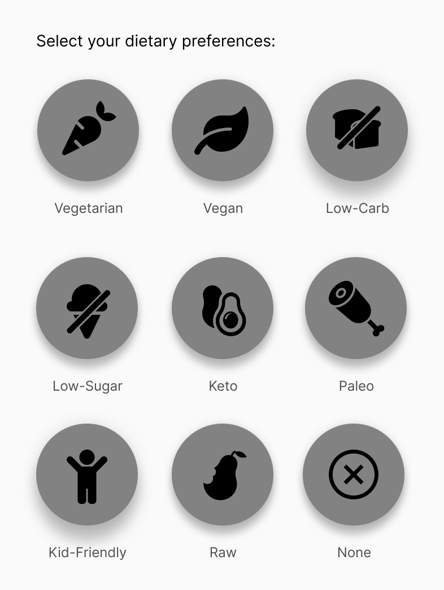
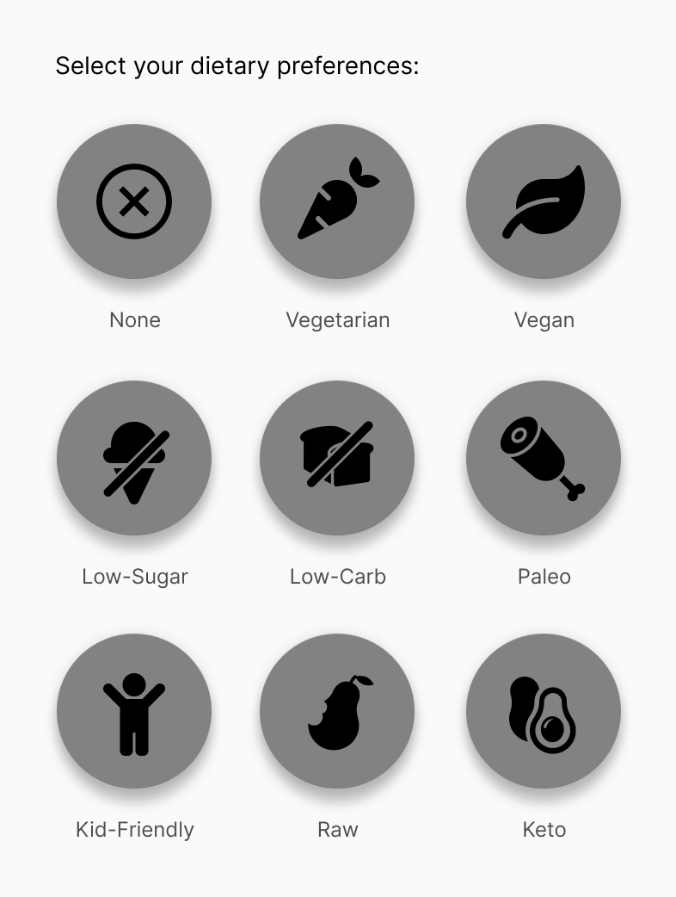
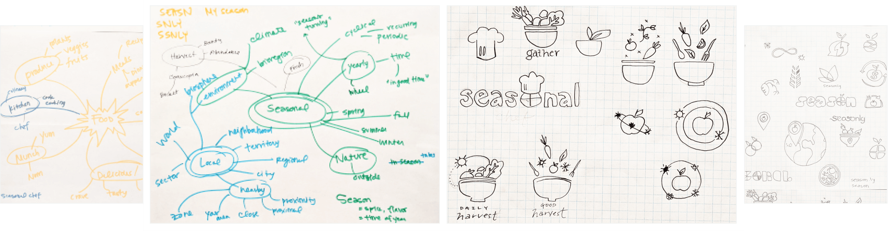
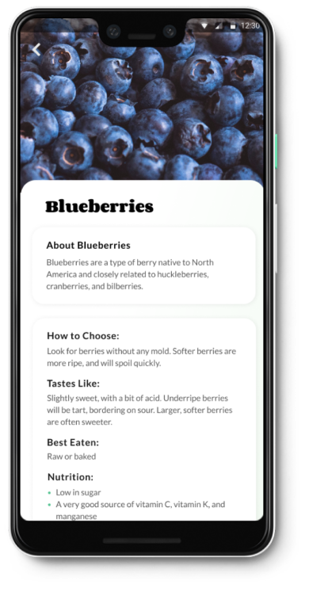

Eating more local, sustainable food can be time-consuming.
Public awareness of the environmental and health benefits of eating more fresh, locally grown fruits and vegetables has been growing fast over the past decade. However, it can be tough to find the time to plan your meals around the foods that are currently in season where you live.
The Solution
Use rigorous personalization to streamline shopping and menu planning.
GoodHarvest is a mobile app for both busy foodies and people new to seasonal eating, to help them quickly plan a meal or make a shopping list based on what produce is in season in their area.
By helping users discover what foods are currently available in their region, and curating a selection of recipes based on those foods, GoodHarvest makes it easier to shop for and cook with fresh fruits and vegetables that were grown locally.
No matter where you live, there is something delicious to discover in your local market — and GoodHarvest makes that a snap.
Deliverables:
User Surveys, Competitive Analysis, User Personas, User Stories & Flows, Wireframes, Usability Testing, High Fidelity Mockups, Clickable Prototype, Style Guide
Make it easier for users to discover, shop for, and cook local, seasonal produce.
Duration:
7 weeks
The Design Process
Could a mobile app really support local farms, reduce carbon emissions, and make us healthier?
That’s the lofty goal of GoodHarvest, which was designed to make it easier for people to shift their eating habits towards more locally & sustainably grown fruits and vegetables.
Designing this app meant getting a thorough understanding of why our target users care about sustainability and eating local, and getting to understand what hurdles are keeping people from choosing these foods less often than they’d like.
Part One
Research & Discovery
To get to know my target audience and clarify their needs, I created a user survey to understand what was stopping users from eating more seasonal, local produce — and what might help make this easier.
I needed to answer the following questions:
What stops people from eating more seasonal, local produce?
What are the current cooking and shopping behaviors of my target population?
Do they plan their meals ahead of time, before they shop for food?
What information might make them want to try a new fruit or vegetable?
What would they find most helpful in a resource designed to help them discover seasonal, local foods in their area?
What are the demographics of my target audience?
User Survey Analysis
This survey uncovered a list of user needs that could help shoppers eat more fresh, seasonal foods. These needs include:
A way to easily see which foods are currently in season in the user’s area
Basic information about produce items, such as basic cooking information, what it tastes like, how to pick a good one, and how long it’s in season in the user’s area
A way to find cooking inspiration for seasonal foods
The survey results also indicated that the shopping and eating behaviors of my target users were very diverse. I realized that I needed to build this app with both seasoned foodies and people new to home cooking in mind.
Competitive Analysis
To better understand the marketplace, I explored the Google Play (Android) and Apple App Store looking for mobile apps that helps users identify local, seasonal produce and discover ways to cook these foods. I reviewed three apps: Seasonal Food Guide, Seasonal, and Seasonal Fruits & Veggies.
While there are more than a dozen mobile apps created to tackle this problem, the vast majority are poorly designed and offer very little information beyond seasonality. Surprisingly, not one of these competitors integrated an in-app recipe finder with the seasonal produce guide.
Pros:
Seasonality information
Can change location and date range
Cons:
Lack of in-app recipe ideas
Confusing interfaces
Information organization problems
Key Takeaways
Through my competitive analysis, I discovered several features I knew I'd want to include — as well as some problematic elements I could avoid.
For example, I had initially thought that categorizing foods into fruit and vegetable categories could help users find foods more easily. However, this pattern highlighted an organizational problem within one of the competing apps: should tomatoes be categorized as a fruit or a vegetable? What about avocado?
Ultimately, the answer depends on your cultural background and familiarity with plant structure. For this reason, I decided that organizing foods alphabetically with a prominent search bar would be the best strategy.
Now it was time to imagine the people that would someday use this app. I analyzed my survey data and noticed three general types of users in my pool:
Younger working students
Adults in their 30s and 40s, often with demanding schedules
Older adults who did the shopping and cooking for the household
I completed phone interviews with one user from each group, to better understand their unique habits, routines, and needs around grocery shopping and cooking. This also gave me an opportunity to learn why eating more local and seasonal food mattered to these people.
By better understanding my users’ motivations, I could more effectively design a product that would help them reach their goals.
Elaine Chen
Engineer, 41
Palo Alto, CA
“I never know what to buy at the farmers’ market. Everything looks beautiful, but if I don’t have a plan for what I buy it’ll just rot in my fridge.”
Motivations:
Wants to eat a healthier, more sustainable diet
Pain Points:
Planning menus around seasonal and local foods is time-consuming
Zoey Gutiérrez
Student, 23
San Francisco, CA
“I try to eat as much seasonal, local food as I can afford, but planning my meals around this is really time-consuming.”
Motivations:
Wants to live more sustainably while sticking to her budget
Pain Points:
Needs a plan for large quantities of seasonal produce bought on sale
Joan Rajah
Retired, 64
Brentwood, CA
“It’s hard to find dishes with new foods my whole family will like – especially my picky grandson!”
Motivations:
Wants to help her whole family eat healthier
Pain Points:
Needs a way to quickly find information while shopping with a fussy toddler
By this point in my project, I already had a lengthy list of potential user stories. I knew I needed to narrow things down, so I asked myself which would be the most crucial components for helping my three user personas complete two key goals:
Discover basic information about a new kind of produce they found at the grocery store or farmers’ market (what it tastes like, how to choose a good one, how long it’s in season, how it’s typically cooked)
Find a list of recipes – curated for the users, based on their dietary preferences and cooking skill level – that include that produce item
While there are a lot of factors at play affecting how much local, seasonal produce a person eats — from cost, to availability, to taste preferences – I had to hone in on just a couple key pieces in my MVP to prevent scope creep.
Generating User Stories & Flows
From here, I narrowed down my user stories into a short list of the most high priority items. I then converted each of these into detailed user flows.
I began the wireframing process by researching common design patterns for different screens I knew I would need in my app (onboarding, account creation, recipe detail, etc). From here, I sketched out multiple iterations of each screen using pen and paper.
When I was happy with my basic sketches, I recreated the best iterations in Figma using simple greyscale shapes and a standard font.
Once my wireframes were complete, I created a prototype using InVision and completed a quick round of user testing with two users.
This round of testing helped me discover a small problem with my “user preferences” page during signup: the “none” option under “enter your dietary preferences” was hiding at the bottom of the selection list. The majority of users would likely have no dietary preferences, which meant this button needed to be given greater visibility and precedence in my next iteration.

Dietary preferences selection with the “none” option hidden at the bottom.

Updated version with the “none” option in the top left.
Dietary preferences selection with the “none” option hidden at the bottom (left), and updated version with the “none” option in the top left.
Part Four
Branding & Style
I kicked off the branding process with an inspiration board to set the mood and tone of the Goodharvest brand and interface.
Developing the Logo
Next, I spent some time mind mapping words related to seasons, food, and eating. With some of my early brand name concepts in mind, I began sketching out different logo ideas.
I ultimately landed on a basket of produce — a harvest — with an orbiting sun overhead to denote the seasons. The sun’s path takes the shape of the basket’s handle.

Creating a Style Guide
I landed on a cheerful, bright color palette evoking creamy avocados and crisp leafy greens, implemented with a tonal scale. I used Corben as the display typeface, as it’s curved, friendly shapes and ligatures complemented the friendly and organic style of GoodHarvest. Lato was used for small heading, body, and caption text because it looks beautiful and clear at all sizes.
I finalized the brand identity of GoodHarvest with a complete style guide, and crafted a set of basic UI elements that could be used in the final design phases of the GoodHarvest app.
Now that I had the elements needed to create my first complete mockups, I began applying my styles to the wireframes to create a high-fidelity prototype.
Testing the Preferences Screen
While users can enjoy most of the features of GoodHarvest without creating an account, those who do complete this process can see a customized feed of recipes, filtered based on their cooking and dietary preferences. Since this is the key factor driving signups, I knew the preferences screen needed to work very intuitively.
First, I asked users which active button design they preferred. The version on the right got 100% of the vote, out of 15 voters.
No votes for this style.
No votes for this style.
100% preferred this version.
Next, I asked users which default state they preferred for this question, considering that the majority of users are likely to have no preference. (Option 1 has no buttons selected on default, options 2 & 3 have "none" selected as default.) 67% of voters preferred the version on the far right.
13% voted for no items selected
20% preferred this version
67% preferred this version, with “none” pre-selected in a vibrant green
Based on this feedback, I used the brightest green color for active buttons in this section, and selected the “none” button by default.
User Testing the Prototype
To understand if users could complete the most critical user stories in my prototype, I conducted three usability tests to see if users could complete the following high priority tasks:
Signing up for a new account using email
Find out how to pick a good avocado, and how long they’ll be in season
Find some recipes that use blueberries
While all my testers were able to complete these tasks quickly and with ease, there were a number of UI components and organizational elements that testers found confusing.
Iterations from User Testing
1. Overhauling the Preferences Page
Results from user testing indicated that several elements on this page were confusing. Users noted that “kid-friendly” wasn’t exactly a dietary preference, and the icons in the dietary preferences section made it more difficult to find the information than simple text. One user also pointed out that it was unlikely any user would ever intentionally select a preference for recipes that took a long time to cook.
To reduce this cognitive overload, I removed the toggle from the food allergies section, converted the food icons into simple text within pills, and removed the confusing cooking time question altogether.
Version 2: Complex preferences page, higher cognitive load
Version 2: Complex preferences page, higher cognitive load.
Version 3: Simplified preferences page, lower cognitive load
2. Reworking the Information Architecture
During user testing, multiple users failed to discover the recipes at the bottom of the food detail pages. Finding this important content required a lot of scrolling, which caused users to miss it.
To solve this problem, I broke up this single long screen into two pages, accessed via tabs at the top for Food Info and Recipes. With this new layout, a shopper who’s making a meal plan before shopping could quickly jump to recipes featuring fresh spring asparagus, for example, rather than having to know that this content is available below the basic food info sections.

In version 2, blueberry recipes were hidden below all this content.
In version 2, blueberry recipes were hidden below all this content.
In version 3, it’s simple to tab between basic food info and recipes featuring that food.
3. Refining the Seasonality Wheel
In an app promoting seasonal produce, the “seasonality wheel” on the produce detail page — showing what months a food is in season — is one of the most important features. However, users weren’t clear where the current month sat on the wheel, and were confused as to how to interpret the season icons.
To solve this problem, month names were added to this design to make this more clear for users.
Users weren’t sure how to tell what months were represented here.
Month names were added in version 3, along with a darker title for the current month.
Month names were added in version 3, along with a darker title for the current month.
Part Six
The Final Prototype
After drafting over 100 screens, three A/B tests, two rounds of users tests, and two clickable prototypes, I'd finally created my final MVP.
Discover Something New and Delicious.
Get stats on new and favorite produce items in seconds. Learn what a food tastes like, how to pick a good one, and whether it’s best enjoyed in a simple salad or tossed on the grill.
Find Out What’s Fresh in Seconds.
With GoodHarvest, you can quickly discover what foods are currently in season in your area, allowing you to more easily plan your meals around local, sustainable produce.
Find Out What’s Fresh in Seconds.
With GoodHarvest, you can quickly discover what foods are currently in season in your area, allowing you to more easily plan your meals around local, sustainable produce.
Get Curated Recipes for Your Unique Lifestyle
GoodHarvest makes it easy for you to find recipes you’ll love using fresh, local, in-season produce.
By allowing users to select their dietary preferences, food allergies, and comfort level in the kitchen, they’ll never have to waste time sorting through dishes that don’t fit their palate or skill level.
As a food lover who’s worked in the nutrition and public health world for many years, I had endless ideas about how an app could help people improve their health by making it easier to eat more fresh produce. However, I discovered that with passion projects like this, it’s easy for scope creep to set in. Only by focusing on my most critical user stories, was I able to make a distinction between the “must haves” and the “nice to haves.”
Watch how your users intuitively interact with a prototype.
During the user testing process, I noticed my users trying to interact with different pages of my prototype in a way I hadn’t foreseen — for example, assuming a horizontal list of cards would have left-right scrolling. By paying close attention during testing, I was able to notice which UI elements could be improved upon by leveraging patterns that were already familiar to users.
Craft your questions carefully.
During the user surveys and testing phases of this project, it became very clear that how I asked questions had a major impact on the quality of my answers. For example, simply asking users which of several designs they preferred doesn’t tell you much. However, giving users the context of your app and asking which of several designs helps them understand the available information better will give you much more valuable information.